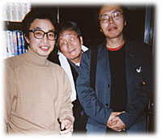

|
石神井 ぼくより上の世代には、自分で古本屋さんを始めた初代独立の人がたくさんいるんですよ。1970年代には、就職しないというのは、特別なことではなかった。それは、あの時代を生きたひとつの雰囲気みたいなもので、ぼくはそういう人たちの最後の世代だと思うんです。ドラマチックにいろんな職を点々として古本屋さんになったわけではないし、一冊の本にひかれて、という美しい物語があったわけでもない。思いもよらないことになってしまった、というくらいで。
月の輪 店員になったのはいつだっけ？
石 二十二か二十三歳のとき。78年。
月 結構、早いよね。
石 就職できないからね。勤めた店に公安がきましたもの。「おまえんとこの店員の内堀は爆弾作ってる」っていう、いやがらせの電話をとったこともあった。店のおやじさんは全然気にしない人で、「そのぐらいの元気がないと、この仕事はできない」って慰めてくれた。
月 そうだよな、爆弾作るくらいの元気がないとさ。
石 80年には店を始めちゃってた。ぼくより下の初代独立組は、月の輪くんとか、池田くんとか、何人かいるけど少ないですよ。

「石神井書林店主・内堀弘氏」
ぼくたちは、本を使って自分の歌をうたう
石 月の輪くんもそうだけど、池田くんとか、中村くんとか、日月堂さんとか、ぼくより後の人でおもしろいことをやってる人は、古書目録でおもしろさを表現してる。目録は、その人が何をしたいのかが、すごく出るよね。
月 めちゃくちゃ出ますね。
石 やっぱり古本屋さんを始める人って、こんなことをやりたい、っていう志を持ってる。志のあるところに金はないんですよ。そういう最初の時期がおもしろい。手書きの目録だったり、ペラペラの薄いものだったり。本の在庫がないから、気持ちのほうがゴツゴツ出ちゃう。新鮮な感じがするよね。扶桑さんて、今は大御所だけれども、最初のころの目録がすごくおもしろい。思いが痛々しいほど出ていて。今のぼくは、在庫を持ってることが力になっちゃってる。月の輪も、そろそろ手馴れてくるころ。あと十年たったら、今のような目録は作れないでしょ？
月 たぶん作れない。
石 おもしろいことやってる人って、最初からおもしろいよ。月の輪は、無我夢中ですごくおもしろい最初のころを、リアルタイムに映した本を出したじゃない。『古本屋月の輪書林』は、サクセスストーリーっていうか……。
月 あんまり成功してないよ。
石 ぼくらにとって成功ってなんだろうね？
月 本が買えて、出したい目録を出せることが、ぼくは成功だと思うな。
石 それって通過点みたいなものでしょ。いつも途中にいるような気がするんだけども、成功ってないのかもしれないね。ビル建てた人を見ても成功って思わないもんな。
月 うん、それはないね。
「月の輪書林店主・高橋徹氏」
月 石神井さんと出会ったのは、いつだったかなあ。おれ、90年独立だから……。
石 月の輪が龍生書林の店員をしていたときに、ふたりとも「たま」のファンクラブの会員だということがわかって、それで。
月 ぼくは独立するときに、郷里の岡山に帰って店を出そうかなと思って、石神井さんに相談にいったの。「三年くらいたったので、そろそろ独立したい。田舎でやろうと思うんですけど、どうでしょうか」ときいたら、田舎はやめたほうがいいといわれた。田舎の十年は東京の一カ月だって。つまり本は触ったり見たりしないと学べない。田舎は市場があんまりなくて本の流通が少ないから、ちょっと待ったほうがいいよと。なかなかいいアドバイスでしょ？
石 田舎でやっとけばよかったんだよ。そうすれば市場に現われることもなかったのに。
月 そのとき、石神井さんがこのいい科白をいったわけよ。ぼくの本にも書いてあるけど、「ぼくたちは、たまのように歌をうたうことはできないし、作家のように文章を書いたりできないけど、本を使って自分の歌をうたうことはできる。それが青くさくたって、自己満足だって、人からなんて言われたっていいじゃない。これからは、目録の時代だよ」って。「ぼくたちは」じゃなくて、「ぼくは」といいたかったんだと思う。おれは目録じゃなくて店を考えてたんだけど、そういうもんかなと思って始めて、一年後に店をやめて目録にした。こうしてビールを飲めてるのも、石神井さんのおかげなんだよね。
店をまるまる一軒、目録というパッケージにして送る
石 ふつうの新刊屋さんは、この本を売ってくださいと頼まれて売ってる。古本屋は問屋がない。ぼくらはだれからも頼まれていない。ぼくらが本を売る理由は、ぼくらの中にしかない。こういうものを売りたいんだって、自分で集めてきたものを売る。お客さんがたくさんいるところに店を出すのが新刊屋さん。ぼくらは、最初にお客さんじゃなくて本がある。本がないと店が作れない。新刊屋さんと古本屋さんはちがうんだよね。
月 こないだ京都の三月書房にいったけど、あそこはよかったよ。新刊屋なのに棚の作り方が古本屋みたいなんですよ。なんか不思議な感じしたよ。迷い込んだような。石神井さん、きっと気に入るよ。おれ、持ってる本なのに、わざわざ新刊で買ったもん。京都の古本屋さんいっぱい回ったんだけど、一番金額使ったの、ここなんだよ。古本屋さんに申し訳ないからあまりいいたくないんだけど。
石 古本屋でくやしいのは、新刊屋に負けることだよね。古本屋は魅力的な棚を作れるはずなんだから。
月 三月書房は上手だよね。商売人だなと思ったよ。新刊の同じ本をどこで買いたいかっていったら、できればここで買いたいっていう雰囲気を作ってる。そういう不思議な新刊屋さんだよね。少なくとも東京にはない。あったらいいと思うけど。
石 むずかしいんだろうね。それは古本屋さんも同じで、売れなきゃしょうがないから、売れる本を並べるでしょ。代々木だったら古い参考書、郊外だったらサラリーマン向けのビジネス書とか、飲み屋街はエッチっぽい本とか、場所場所の需要に合わせた棚を作っていく。自分が売りたい本というより、売れる本が棚を占めていくわけです。目録は、そういうことに関係なしに作れるからね。ぼくが集めた本をおもしろいと思ってくれそうな人に、店をまるまる一軒、目録というパッケージにして送るわけ。自分の思うように表現できるのが古書目録ですよね。
何かを専門とする店を作ろうとしたときに、東京だったら立地のいいところじゃないとお客さんは来ない。そういう場所の家賃を払ったらペイしないよ。いきなり南青山で西洋骨董関係の本の店なんて、できっこない。とすると、ぼくらができるような場所で、お金がなくて、おもしろい本屋さんを始めるとしたら、目録で棚を作って、お客さんに注文してもらうというのが、一番やりやすかったんだと思う。
月 そうそう。
石 今、古本もインターネットで検索して買えますよね。ほしい本の題名を入力して検索する。便利だと思うけど、あれは閉架式の図書館。古書目録は開架式の図書館。開架式の図書館では、本の背を見ながら、ああこんな本があるんだって、棚から引っ張り出してみたりする。衝動買いが起きる。お店に近いと思う。目録は、夜中でもいつでも、家に古本屋が一軒送られてくるような感覚。月の輪のとこは十坪しかないけど、目録を見ると八重洲ブックセンターみたい。
月 いやいや、分厚いからいいとは限らないよ。
石 三月書房さんみたいに、この店がなくなったら寂しいなって思う新刊屋さんは少ないよね。古本屋さんは、小さいけど個性を持った店が多い。そういう店って、目録じゃないと出てこない。店舗でやろうと思うと、営業的に成り立たなかったりして。
月 東京でも目録だけでやってる人はそんなに多くない。東京の七百軒の古本屋のうち、一割くらいかな。石神井さんの場合、師匠がよかったよね。この『石神井書林日録』の、220ページ〜222ページにかけては読んどいたほうがいいよ。出会ったこと自体がよかった。石神井さんはこのとき二十代でしょ。これは美しいと思う。
まだやってもいいよと、ＯＫを出してくれるのはお客さん
月 独立して古本屋を始める人が少ないのは、みんな、やりたいことがないからなんじゃないの？ 歌いたい歌がない人が多いよ。音調が多少狂ってたって、それがあれば生きていける。あんまりもうからないけど、歌いたい歌があるかどうかが肝心で、あとはどうにでもなるもん。三月書房は歌が聞えたよ。歌いたい歌を歌う。そういう商売をしたかった。そのほうが楽しいし、どうせ売れないなら、やりたいことやって売れないほうが、あきらめがつく。もうからないけど、くってはいける。
石 本は食べさせてくれるね。最初は目録を作っても、お客さんに送る送料がないんですよ。本を買ってスッカラカンになってるから、印刷屋さんに払うお金もない。目録を出して注文がきて、送料と印刷代の合計額を超えると、うちはまだ続くんだなって。お客さんに、まだやってもいいよって言われたみたいな気がして。それでまた好きなようにやってみようと思って、目録を作って送る。その繰り返し。「つまんないよ、買うものない」って言われたら、店を閉めるしかない。いつもやりたいことをやっているけども、ＯＫを出してくれてるのはお客さん。
石 通販は、お客に合うといういやな部分がないんだよね。お客さんのところにいって営業して注文をとってくるわけじゃない。でも、会ったことはないけども、声とか注文の葉書の字とかを覚えちゃうもんで、それを見るとホッとしたりする。
月 会わなきゃよかったなっていうのもあるよ。
石 まあ、それもありますけどね。
月 逆に展覧会で毎回会いたい人もいるしさ。
石 「高橋（月の輪）さんて、マニアなんですか？」っていわれることない？
月 あるある。目録にある本は全部読まれてるんですかって。読んだ本は一冊もないよ。
石 この本の扉の解説がいいよね。「読者でもなく、著者でもなく、本をあつかう古本屋さん……」
月 たまに読むこともあるけどさ。
石 ぼくらは釣人じゃなくて漁師なんですよ。地引網にかかった魚を全部食べるんですかってきく人はいないでしょ。
市場で闘う相手は、安く買いたい自分の気持ち
石 よその古本屋さんにいくのは、すごい楽しいよね。地方の古本屋さんにいって、棚を見てるときは至福の時間です。
月 ほんとですよね。ひとりでいくべきだよ。かみさんといっても、かみさん興味ないし。
石 映画と一緒で、ふたりでいってもひとりで見てる。
月 市場でも、いくらの札を入れようかって、二人で仲良く相談してる人がいるけどさ、ちがうなって感じるね。おれ、石神井さんと市場で会ったって、こんにちは、くらいしか言わないよ。
石 市場に見たこともない本があって、たまたま自分が初めて見る本なのかもしれないし、十年に一回しか出ないめずらしい本なのかもしれない。最初のころは、どちらかわからない。
月 わかんないよ。今でもわかんないもんな。
石 それを人に聞くのは簡単だけど、絶対、聞いちゃいけないんだよね。十万円の札を入れたら、じつは五千円の本だった。そこで、これはよくある本なんだと学ぶ。逆に五千円入れて、十万円でだれかが持っていったら、十年に一回の本だったと知る。
月 市場はそういうもんだよね。
石 人に聞いちゃったら、自分の中の一本立ってるものが折れる。だから、どんな買いまちがいしたっていいんですよ。
月 古本屋って、なんでも知ってるように見えるけど、知ってるのは自分の好きな狭い範囲のことだけで、あとは勘。勘が働くかどうかは大きい。石神井さんも本の中で書いてるよね、自分が闘ってるのは自分なんだって。
石 その本がほしいと思ってる自分の気持ちに値段をつけるっていうけど、やっぱり安く買いたい気持ちもあるじゃない。その安く買いたい気持ちとどう闘うか。
月 そうそう、すごい闘ってる。だから人のことはあまり浮かばないね。
石 きみは最近、安く買いたい気持ちを多発してるんじゃないか？（笑）
月 負けてるけどさ、みんな毎日負けてるんだよ。勝つと浮き上がるけど、たいしたことないんだよ。
石 野球の選手は三割しか打たない。七割は負けてる。市場はそういうところ。

「左・高橋徹氏、中央・担当編集者中川六平、右・内堀弘氏」
暮らしの中で、売り買いしてる時間が古本屋
石 ぼくらにとって古本屋という商売は、本を売ったり買ったりしている時間のことだと思うんですよ。店にきれいに本がそろっていて、店主が奥に座って見渡してるというような静止画ではない。市場で買った、買えなかった、目録を作った、という動的なもの。それをしなくなったら、もう古本屋じゃないんです。ぼくたちは共同保育所をやっていて、ぼくの中には古本屋以外の時間もある。自分が本のことだけになっていくのって、好きじゃないのね。日々の暮らしの中で、自分がアクティブなときだけが古本屋なんです。目録はその経過報告みたいなもんでしょう。月の輪はすごく編集して、きちっと形のある映画みたいなものを作るけど、ぼくのは映画でいうとラッシュみたいなもの。
月 ぼくにとっては、目録は８ミリ映画。全部ひとりで作る８ミリ映画だよ。
石 月の輪の場合は、最初はやりたいことがはっきりしてなかった。おれは何かをしたいんだっていう、形にならない無気味さがあった。理解しがたい特別な物の考え方をする人だから。
月 おれ、幸せだと思うよ。お客さんは死んでいくけど、それ以上の数の新しいお客がくるからね。一回くらい手をとって、ありがとうございましたって、あいさつしなきゃいけない人も死んでるんだよ。ほんと、いろいろ教えられるわけよ。
石 幸せな仕事ですよ。
|